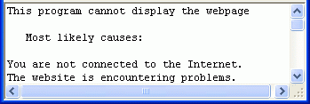
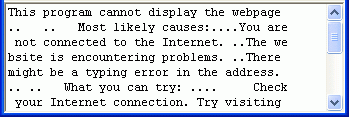
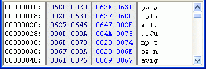
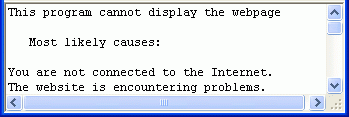
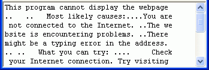
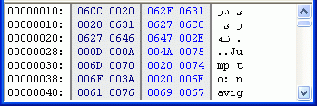

Text mode

Binary mode

Hex mode

Unicode mode

Unicode/Hex mode
There are 5 view modes available:

Text mode

Binary mode
Hex mode
Unicode mode

Unicode/Hex mode
There is extended version of this component available, ATViewer, which can show files in such modes as RTF, Image, Multimedia, Internet and WLX Plugins. But if you just need to show a plain file dump, ATBinHex should be enough.
There is also FreePascal/Lazarus version (ported from original version), which is maintained by independent developer. This version is currently in beta stage, some features are not yet implemented. Refer to LuiPack page.